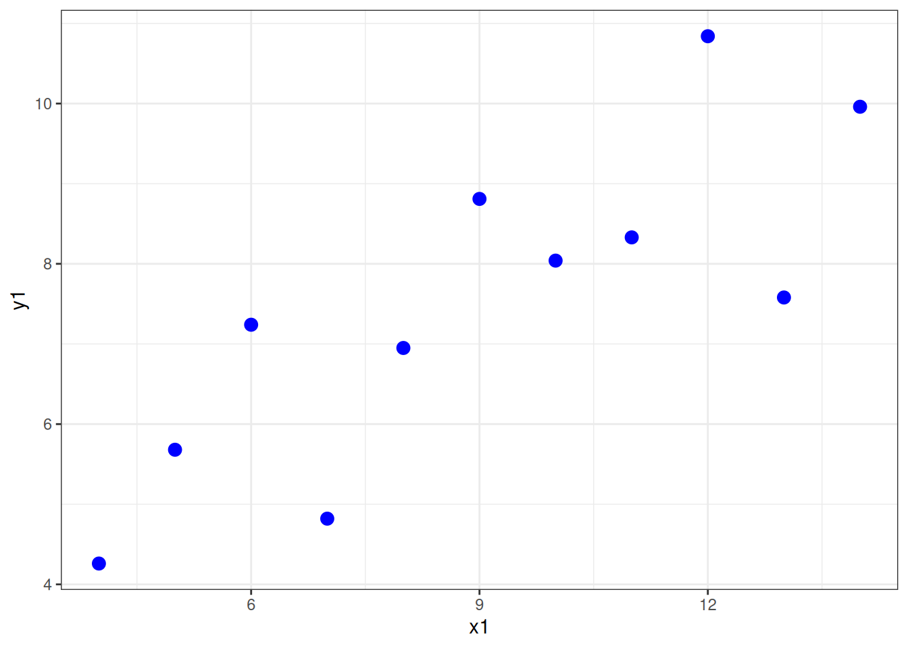
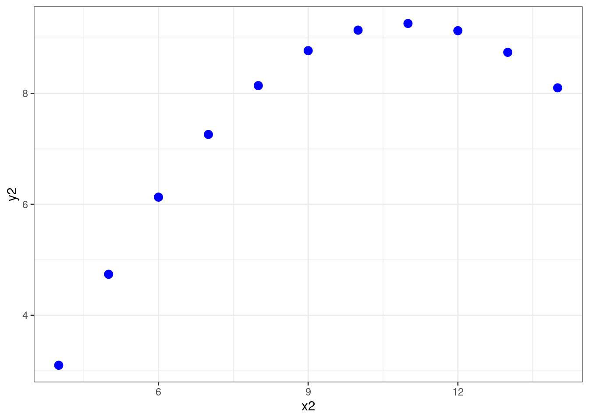
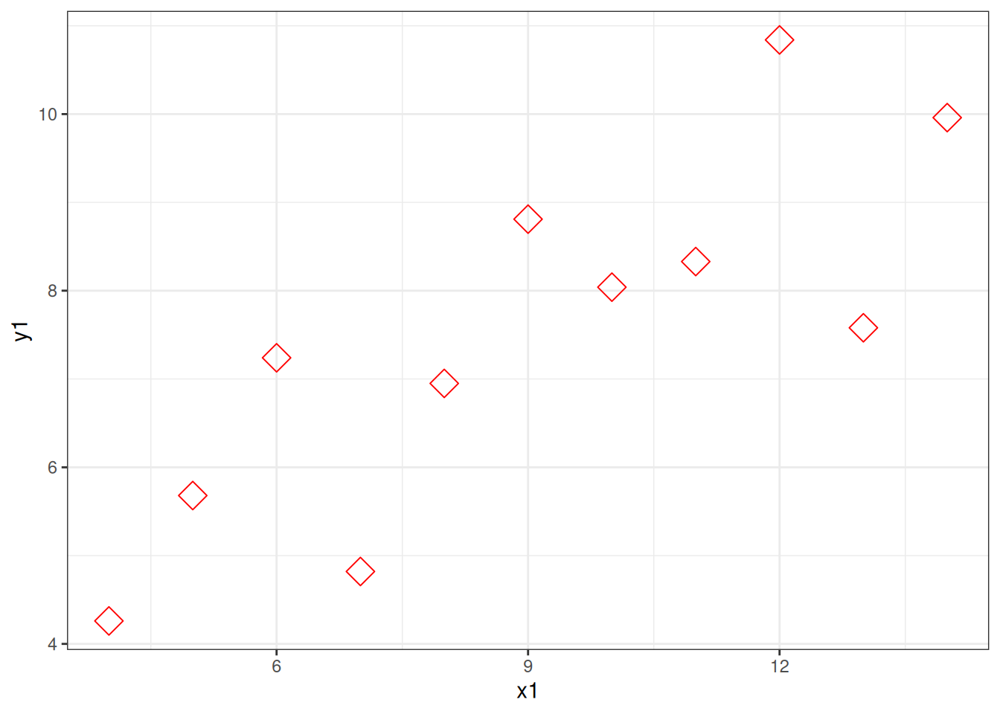
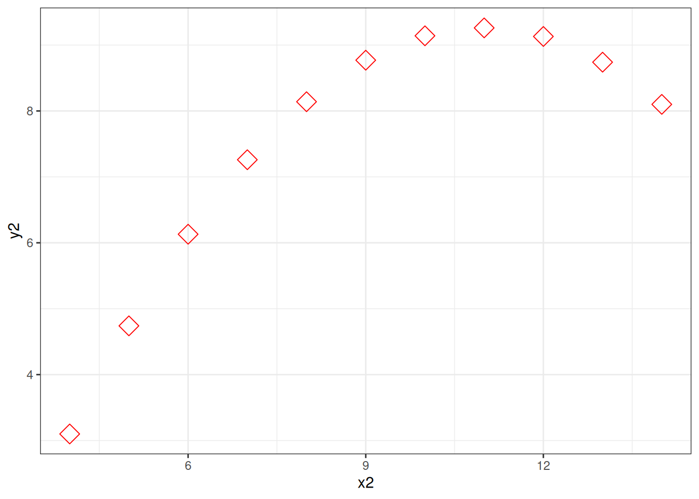

Chapter 6 Coding Principles
This class is about two kinds of fundamental principles of coding. The first is fundamental methods of making code do what you want - if statement, loops, functions. The second is fundamental principles of good code. Although we are using R, all programming languages use similar methods (although the exact syntax differs), and the principles of good code will also apply across languages.
As well demonstrating these fundamentals, these pages also introduce the vocabulary used to discuss them. Knowing the vocabulary helps because it means you know what terms to use when searching for solutions to problems you have.
6.1 Fundamental methods
6.1.1 If statements
So far we have written simple scripts that do things in order, top to bottom
a <- 1 # define a variable
a <- a + 1 #add 1
print(a) # output the result## [1] 2The first block above is the code, the second block (the lines which start with ##) is the output.
Changing which statements are run is called “flow control.” An “If statement” is a fundamental way of doing this. It allows us to specify one set statements to run if a certain conditions is met. For example
a <- 1 # define a variable
a <- a + 1 #add 1
if(a>4) # this is the condition which has to be met, the 'test expression'
{print(a)} # this statement runs if the test expression is trueNotice there is no output. Copy the code to your own computer and run it. Now change the first line to a <- 9 and run it again.
An If statement defines a branch in the flow of a script. The default can be nothing happening, but sometimes you want to define two alternatives. You can do this with an “If…else…statement”
a <- 1 # define a variable
a <- a + 1 #add 1
if(a>4){ # this is the condition which has to be met, the 'test expression'
print(paste(a," is more than 4")) # this statement runs if the test expression is true
} else {
{print(paste(a," is equal or less than 4"))} # this statement runs if the test expression is false
}## [1] "2 is equal or less than 4"You can actually have as many branches as you like, defining a series of test_expressions, like this
type_of_thing <- ''
print("Is four a lot?")
if (type_of_thing=='Murders'){
print("yes")
} else if (type_of_thing=='Dollars'){
print("no")
} else {
print("Depends on the context")
}## [1] "Is four a lot?"
## [1] "Depends on the context"6.1.2 Loops
Loops repeat, either iterating over a set values, like this:
for (i in 1:5){
print(i)
}## [1] 1
## [1] 2
## [1] 3
## [1] 4
## [1] 5Or until some condition is met
i <- 1 #need to initialise a starting value
while(i<6){
print(i)
i <- i + 1 # increment the value of the counter
}## [1] 1
## [1] 2
## [1] 3
## [1] 4
## [1] 5Note that this second version, a “while loop” uses a test expression just like an if statement
Loops are useful wherever you might want to repeat some operation.
years <- 10 #how many years since you started saving
savings <-100 #how much you start with
interest <- 1.05 #rate of interest, ie 5% interest
#Calculate using a loop
for (year in 1:years){
savings<-savings*interest
}
print(paste("After", years, "years you will have £", round(savings,2))) #save more, kids## [1] "After 10 years you will have £ 162.89"Lots of people advise against using loops because they are can be slow and it isn’t always obvious what they are doing. Alternatives often exist, like vectorisation:
years <- 20 #how many years since you started saving
savings <-100 #how much you start with
interest <- 1.05 #rate of interest, ie 5% interest
#Calculate using a vector
total_at_each_year=savings*interest**(1:years) #rather than a loop all the answer values are stored in a single vector
#plot(total_at_each_year,xlab="years") #bonus! We can plot, since we now have all the intervening values savedThe problem is, loops are the natural way to think about some problems. Often I first write my code with loops then, when I know what I really want to do I try and work out a way to do it with vectorisation.
6.1.3 Functions
Functions take in values (called “arguments”), do something with them, and give a value or values back in return. You have already used functions, for example the mean function
my_nums <- c(78,12,32,24,03,89) #just a vector of some numbers
mean(my_nums) #use the mean function to find the average## [1] 39.66667Functions always do the same thing, but give different results depending on the inputs (depending on the “arguments you pass to the function”).
You can write your own functions, and then use them (“call them”) again and again. Here is the general form of a function
myfunctionname <- function(input_value) {
# comment line helpfully explaining what the function does
output_value <- input_value #lines of code which do something to the input to produce the output
return(output_value)
}Note a couple of things: when you run this code it does not produce any output, but a new object appears in the “global environment” window, top right. Like a variable, your function is now stored in the memory of the current R session.
You can call this function now. If you close R you’ll need to define the function again by running the above code again (other functions are inbuilt, like mean and are loaded at startup, or when you use the library command to load a set of functions).
Now, when we call the function, we pass actual values.
myfunctionname(3)## [1] 3Let’s make our function slightly more complicated
outcheck <- function(val,threshold) {
# outlier checker
if(val<threshold){
output_value <- val #if value is below theshold return that value
} else {
output_value <- NA #otherwise, return NaN
}
return(output_value)
}This function takes two input values, and returns a single value which depends on the relation between the two
outcheck(3,5)## [1] 3outcheck(7,5)## [1] NA6.1.3.1 A note about scope
Variables within functions are kept ‘inside’ the functions (within the “scope” of the function). Once you pass a value to a function is acquires the label set in the function definition. Variables defined within the function don’t persist outside of it (they don’t affect the “global environment”)
So, for example, it doesn’t matter if you have another variable called threshold, the threshold within the function is set by the second value passed it. Like this:
threshold <- 100
outcheck(7,5) #returns NA because 7 is higher than 5## [1] NA6.1.4 Exercises 1
- Write an if…else statement that prints “ODD” if the number is odd, “EVEN” if the number is even (hint: you might use the remainder function %% (try 4%%2 to see how much is left when you divide 4 by 2)
- Write a loop which goes from 10 to 20 in steps of 3
- Write a function which prints “FIZZ” if a number is divisible by 3, and “BUZZ” if it is divisible by 5 and “FIZZBUZZ” if it is divisble by 3 and 5
- Write a loop which counts from 1 to 100 and applies the fizzbuzz function to each number
6.1.5 More
- Lisa DeBruine, & Dale Barr. (2019, December 5). Data Skills for Reproducible Science (Version 1.0.0). Zenodo. http://doi.org/10.5281/zenodo.3564555: Iterations & Functions
- datamentor.io on Flow control
6.2 Fundamental principles of good code
6.2.1 Readability Matters
Your most important collaborator is you from six months ago, and they don’t answer email.
Good code doesn’t just work, it is easy to understand. This supports the code being checked for errors, modified and improved (by you as well as by other people).
To support this you should make your code readable. This means commenting your code, but also laying it out nicely, and using sensible names for variables and function. The aim is to make the code explain itself, as well as doing something. Someone who reads your code - a future you maybe, or a collaborator - needs to be able to run the code, yes, but they also need to know what you are doing and why you are doing. Look at this function, it hard to understand, right?
pf <- function(n){ p=1 ; if (n>1){ i = 2; while( (i<(n/2+1)) & (p==1) ) {if (n%%i ==0) p=0; i=i+1 } } else {p=0 }; return(p) }This kind of code is very compressed. You can fit a lot in a few lines, but it is useless because nobody else will understand it, and probably the person who wrote it won’t understand it when they come back to it (and that means they will miss any bugs, or will find it hard to improve or repurpose).
Readability is improved a lot by adding some spacing and tabs. Have another go at figuring out what the code does:
pf <- function(n){
p=1
if (n>1){
i = 2
while( (i<(n/2+1)) & (p==1) ) {
if (n%%i ==0) {
p=0
}
i=i+1
}
} else {
p=0
}
return(p)
}Now we make the variable and function names sensible:
primecheck <- function(num){
isprime=TRUE
if (num>1){
i = 2
while( (i<(num/2+1)) & (isprime==TRUE) ) {
if (num%%i ==0) {
isprime=FALSE
}
i=i+1
}
} else {
isprime=FALSE
}
return(isprime)
}Can you tell what it does yet?
Now fully commented
primecheck <- function(num){
#check if a number is prime
# - assumes the number provided is an integer
# - works by working through all possible divisors up to half the test number, checking if the remainer is 0
#
isprime=TRUE # a flag, which tracks if we think the number is prime. We start out assuming our number *is* prime
# first we only need to do the complicated method for numbers great than 1
if (num>1){
i = 2 #a counter, starting at 2 (because all numbers divide by 1)
#use while loop to check all divisors until we've done them all or we find one (and confirm the number is not prime)
while( (i<(num/2+1)) & (isprime==TRUE) ) {
if (num%%i ==0) {
#if the number divides by another number with no remainder it can't be prime, so we change the flag
isprime=FALSE
}
i=i+1 # increment the counter, so we work through all possible divisors
}
} else {
# if the number is 1 or lower it can't be prime, so we change the flag
isprime=FALSE
}
return(isprime) #return the flag as the output of the function, 0 -> not prime, 1 -> prime
}It is possible to comment too much. The code above I commented so someone who wasn’t an experienced programmer could read the comments and it would help them understand how the code worked (you can tell me if I succeeded). Usually a few fewer comments might make the code easier to read, with the assumption that anyone reading it has a bit of experience with the coding language. Like this
primecheck <- function(num){
#check if a number is prime
# - assumes input is integer
isprime=TRUE # a flag, start assuming our number *is* prime
# only check numbers > 1
if (num>1){
i = 2 #a counter
#check all divisors until we've done them all or we find one
while( (i<(num/2+1)) & (isprime==TRUE) ) {
if (num%%i ==0) {
#no remainder -> number isn't prime
isprime=FALSE
}
i=i+1 # increment the counter
}
} else {
# if the number is 1 or lower it can't be prime
isprime=FALSE
}
return(isprime)
}This version is 22 lines rather than 1, but I hope you agree it is easier to work with. There’s no shortage of space in R scripts, so if in doubt, put some effort in to laying things out nicely, use sensible names for variable functions and add comments. You’ll thank yourself when you come back to your code (which you will always have to).
6.2.2 Avoid hard coded values
Say you were going to load some data, you could do this:
mydata = read.csv('/home/tom/Desktop/psy6422/mydatafile.csv')Now this happens to work on my computer, but it won’t on yours. The reason it won’t work isn’t because there is a bug in how i’m loading data, just that you don’t have a file in the same place as I do. Far better, for both readability and debugging if you seperate out values that might change from the commands that use them.
Like this:
datafile = '/home/tom/Desktop/psy6422/mydatafile.csv'
mydata = read.csv(datafile)Now the second line is easier to read, and you also have a variable which you can reuse. For example maybe later in your script you want to save the name of the raw data file somewhere. You can just use:
label = paste('This plot generated using data from ', datafile)And when you use the same script for different data, both the lines loading data and recording the data file are correct.
Another example, suppose you had two plots:
graph1 <- ggplot(data = anscombe, mapping = aes(x = x1, y=y1))
graph1 + geom_point(color='blue',size=3) #change this line for different look
graph2 <- ggplot(data = anscombe, mapping = aes(x = x2, y=y2))
graph2 + geom_point(color='blue',size=3) #change this line for different look
Adding variables means you only need to edit one line to change the look of both plots
pointcolour='red'; pointsize=5 ; pointshape = 23 #change this line for different look
graph1 <- ggplot(data = anscombe, mapping = aes(x = x1, y=y1))
graph1 + geom_point(color=pointcolour,size=pointsize, shape = pointshape) # never change these lines
graph2 <- ggplot(data = anscombe, mapping = aes(x = x2, y=y2))
graph2 + geom_point(color=pointcolour,size=pointsize, shape = pointshape) # never change these lines
This may seem minor, but as your code gets longer developing habits like this will save you time, and make your code easier to work with.
6.2.3 Functionalise & Generalise
If you ever find yourself using very similar lines of code, you should think about making a function. Functions make your code shorter and easier to read (and write), and they make it way easier to update (because when you catch a bug you can just update the code in the function, rather than every time you repeated those lines).
Functions are also an opportunity to think to yourself “what is the most general purpose way of doing what I’m doing.” Thinking like this will help you develop powerful, flexible, code which you can use to do multiple things.
Let’s look at a toy example:
mynumbers = c(2,3,4)
#double and add one to each number
mynumbers[1] <- mynumbers[1]*2+1 # line 1
mynumbers[2] <- mynumbers[2]*2+1 # line 2
mynumbers[3] <- mynumbers[3]*2+1 # line 3
print(mynumbers)## [1] 5 7 9This can be improved with a function
myfunc <- function(num){
#toy function, doubles and adds 1
return(num*2+1)
}
mynumbers = c(2,3,4)
mynumbers <- myfunc(mynumbers) # all the work with 1 line!
print(mynumbers)## [1] 5 7 9This code is easier to read, easier to change, and you can write new code which uses this function again.
6.2.4 Ask for help
Nobody finds this easy straight away. Learning how to find help a core programming skill (along with not giving up when it feels like you are completely stuck).
Part of this is knowing how programming people talk about stuff so you can search effectively for solutions.
If you get an error message, copy and paste it into your search.
If you aren’t sure what is causing the problem, try tidying up your code. Often just making everything simpler/neater will solve your problem. Restart R. Run your script line by line, checking each line works and does what you expect. Add comments as you go back through your script.
If you are really stuck, just trying to share your problem is a good way of indentifying exactly what you want to do, and why you can’t. This often means creating a ‘minimal reproducible example’ - the smallest script possible generates the error you’re trying to solve. Often the process of working on this helps you solve the problem yourself, but if it doesn’t it means you have clear way of showing someone else what you’re issue it. See this How to make a great R reproducible example and this How do I ask a good question?. Now you have your minimal reproducible example you can ask a friend, teacher, or post it to a forum.
6.2.5 Exercises 2
- In pairs, take one person’s code from a previous week’s project and review for readability, using the better code checklist below. Write an improved version together
- In pairs, try these ‘Parsons Problems’ only try the R problems not the python (
.py) ones - Review these articles on how to make a minimal reproducible example: How to make a great R reproducible example & How do I ask a good question?.
- Make and share a minimal reproducible example of your next R problem
6.2.6 Checklist
control flow
- if statements
- if …then statements
- if …then .. else statements
- for loops
- while loops
- functions
- scope
better code
- readable code
- indents and whitespace
- sensible variable names
- comments
- hard coded values aid extension, efficiency and reproducibility
- functions make code easier to read, easier to modify, reduce the likelihood of bugs
- all functions begin with a plain language comment explaining what the function does
ask for help
- google the error message
- make a minimal reproducible example
6.2.7 Resources
- Patrick J Mineault & The Good Research Code Handbook Community (2021). The Good Research Code Handbook. Zenodo. doi:10.5281/zenodo.5796873
- Function tips
- Vocabulary: Names for common programming symbols
- Program better, for fun and for profit
- Prime Hints For Running A Data Project In R
- Software Carpentry: Best Practices for Writing R Code
- Nice R code: bad habits
- The Good Research Code Handbook [python orientated]
- Barnes, N. (2010). Publish your computer code: it is good enough. Nature, 467(7317), 753-753.
- Axelrod, V. (2014). Minimizing bugs in cognitive neuroscience programming. Frontiers in psychology, 5, 1435.
- Wilson, G., Aruliah, D. A., Brown, C. T., Hong, N. P. C., Davis, M., Guy, R. T., … & Waugh, B. (2014). Best practices for scientific computing. PLoS biology] 12(1), e1001745.
- r-bloggers.com Looping through variable names and generating plots
- r-bloggers.com Coding Principles: Updating and Maintaining Code
- Advanced R by Hadley Wickham: Style guide